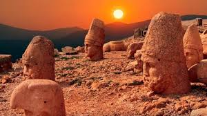
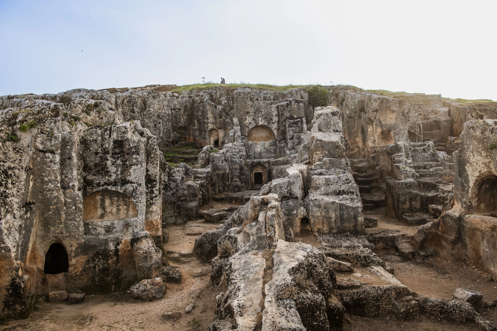
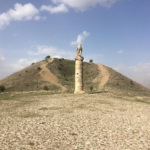

Tarihi Mirasımız
Adıyaman, tarihi zenginliği ile dikkat çeker. Urfa'nın kuzeybatısında yer alır ve tarih boyunca birçok medeniyete ev sahipliği yapmıştır.
Adıyaman'ın tarihi eserleri arasında Nemrut Dağı, Perre Antik Kenti ve Karakuş Tümülüsü öne çıkar.


